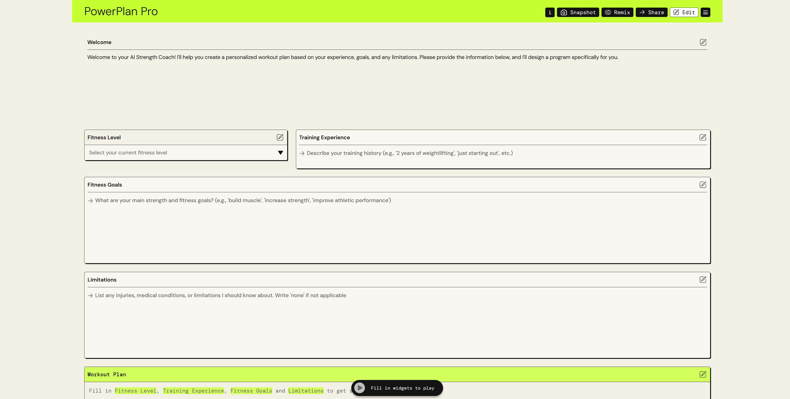
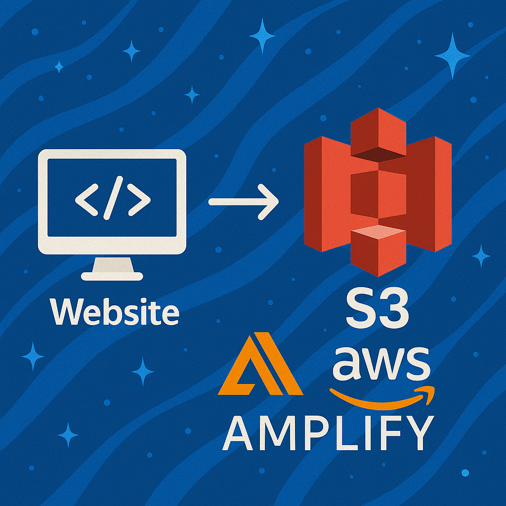

3-Tier Architecture on AWS
Designed and deployed a secure 3-tier architecture on AWS with web, app, and database layers.
Hi, I’m Antoine Boylston! I’ve spent nearly 20 years at Amazon, currently working in automation and controls where I’ve built experience troubleshooting, leading projects, and keeping complex systems running. I’m now completing my B.S. in Computer Science with a concentration in Data Analytics, learning through the AWS Cloud Institute, and building hands-on projects as I work toward becoming a Cloud Engineer. I enjoy breaking down problems, exploring new technologies, and helping others succeed along the way.

Designed and deployed a secure 3-tier architecture on AWS with web, app, and database layers.

Demonstrated the power of prompt engineering by building and presenting a how-to guide for creating AI-driven applications on AWS PartyRock.

Demonstrated how to host a website on AWS using Amazon S3 and Amplify.
My career has been shaped by a love of solving problems, a drive to keep learning, and a passion for helping others. Here’s a look at where I’ve been, where I am now, and where I’m headed next.
I was born and raised in Flint, MI, where my love for technology began early. Video games and helping my father build and repair things kept me curious and focused. At 12 years old, I built my first PC alongside him — an experience that sparked my passion for problem-solving and set me on the path I’m still following today.
At 19, I began working at Amazon in shipping while pursuing a B.S. in Criminal Justice with a focus on juvenile justice. During that time, I served on the Kentucky Juvenile Justice Advisory Board, interned at the Fayette County Juvenile Detention Center, and contributed to research on disproportionate minority contact with police.
As I prepared for graduate school, I was offered a role in Reliability and Maintenance Engineering at Amazon. Accepting the opportunity marked my first career pivot — a decision that shifted my path from criminal justice into engineering, where I began building the foundation for the career I continue to grow today.
I began my engineering career in Amazon’s Make On Demand department, which produced books and media such as DVDs, Blu-rays, and CDs. In this role, I carried out preventive maintenance, responded quickly to breakdowns, and investigated root causes to implement effective solutions. I also led long-term improvement projects — for example, designing and fabricating a physical guard for cutting machines to protect associates if electronic safeguards failed or were bypassed.
This role also gave me the opportunity to travel across the country, training other Reliability and Maintenance Engineers in fabrication and general maintenance of Make On Demand equipment. These experiences broadened my skills, strengthened my problem-solving abilities, and prepared me for my transition into Automation Engineering within Amazon’s Re-commerce and Returns network.
In my current role as an Automation Engineer at Amazon, I focus on maximizing equipment reliability and keeping operations running smoothly. I work with systems like conveyors, sorters, scanners, cameras, print-and-apply equipment, and robtic palletizers, serving as the site expert for automation support.
Day to day, I troubleshoot PLC control systems, support technicians, and collaborate with Operations and Engineering teams to optimize material handling performance. I also take on improvement projects — from creating tools like a light bulb tester to documenting processes that help teams scale more efficiently.
What I enjoy most is the challenge: every issue is a puzzle, and solving it not only restores operations but often sparks ideas for long-term improvements. These experiences continue to sharpen my problem-solving skills as I prepare for my next chapter in the cloud.
After years of growing in engineering roles, I made the decision to invest in my future by returning to school. I am currently completing a B.S. in Computer Science with a concentration in Data Analytics at Southern New Hampshire University, with an expected graduation in Winter 2026.
Alongside this, I’m enrolled in the AWS Cloud Institute, where I’m gaining hands-on experience with cloud infrastructure, automation, and application development. This program has already led to my AWS Certified Cloud Practitioner credential, and I’m actively preparing for additional certifications such as the AWS Developer Associate.
For me, education isn’t just about earning degrees or certifications — it’s about applying what I learn to real-world projects and building the knowledge and experience to hit the ground running and quickly become a top contributor once I step into a Cloud Engineer role.
Looking ahead, my goal is to transition into a Cloud Engineer role where I can apply both my 20 years of engineering experience at Amazon and the cloud skills I’ve been developing through the AWS Cloud Institute and my Computer Science degree. I’m focused on continuing to build hands-on AWS projects, earning advanced certifications, and sharpening my ability to solve complex problems in the cloud just as I’ve done in automation and controls.
In the long term, I aim to grow into roles that allow me to mentor others, contribute to innovative cloud solutions, and drive meaningful improvements for the teams and customers I support.